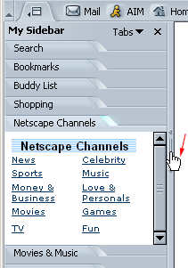
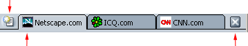
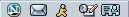

このドキュメントは、情報提供のみを目的として Mozilla により提供されたものです。 このドキュメントには、インターネット上で個人情報のプライバシーおよびセキュリティを保護するための手順が記載されています。 ただし、このドキュメントには、オンラインにおけるプライバシーおよびセキュリティに関するすべての問題が記載されているわけではなく、また、インターネット上における妥当なプライバシーおよびセキュリティ保護に関する Mozilla からの勧告を表すものでもありません。
Mozilla をカスタマイズする
Sidebar、ブックマーク、タブ式ブラウジングなどの機能を使用して、Mozilla をカスタマイズできます。
このセクションでは、カスタマイズ可能な Mozilla のブラウザ コンポーネントである Navigator について説明します。
Sidebar
Sidebar について
Sidebar はブラウザにあるフレームで、カスタマイズが可能です。ここには、− 最新のニュースや天気、アドレス帳、友だちリスト、株式相場、カレンダーなど − 常時使用する項目を保持できます。 この他にも多くのオプションを選択できます。Sidebar にはこれらの項目がタブとして表示され、タブの内容は常に最新の情報に更新されます。
Mozilla には、予めいくつかの Sidebar タブが設定されていますが、タブを追加、削除、並べ替えて Sidebar をニーズに合わせて設定することができます。
[ このセクションの最初に戻る］
Sidebar を使用する
Sidebar は、手作業で閉じない限りブラウザの左側に常に表示されています。タブを表示するには：
- タブのタイトルをクリックします。たとえば、［検索］という文字をクリックすると、 ［検索］タブが開き、Web ページを検索することができます。
| 
|
Sidebar の
ハンドル
|
|
Sidebar が表示されない場合、閉じられている可能性があります。Sidebar を開くには次の操作を行います。：
- マウスポインタを Mozilla ウィンドウの左側の枠線に沿って上下に動かします。Sidebar の「ハンドル」に触れると、ポインタは図に示すように手の形に変化します。
- ハンドルをクリックして Sidebar を開きます。
注記： Navigator の［表示］メニュー（［表示／非表示］サブメニュー）で［Sidebar］がオフの場合、フレームやハンドルは表示されません。
|
ヒント： Sidebar タブを再び読み込むには、タブのタイトルを右クリックして、ポップアップ メニューから［再読み込み］を選択します。
[ このセクションの最初に戻る］
Sidebar タブを追加する
新しいタブを追加するには：
- Sidebar 上部の［タブ］をクリックし、メニューから［Sidebar の設定］を選択します。
- ［Sidebar の設定］ダイアログ ボックスで、左側のリストからタブを選択します。三角形をクリックすると、フォルダを開閉できます。
- ［追加］をクリックします。
- 必要に応じて、上の操作を繰り返してタブを追加します。
- ［OK］をクリックして完了します。
注記： Sidebar に 8 個以上のタブを追加すると、画面の見やすさを保つために、それ以上のタブは表示されなくなります。 隠れたタブを表示するには、目的のタブが表示されるまで Sidebar の下にある下矢印ボタンをクリックします。 表示したタブを再び非表示にするには、上矢印ボタンをクリックします。
ヒント：
- Sidebar タブを追加する前にプレビューするには、［Sidebar の設定］ダイアログ ボックスの左側にあるリストからタブを選択し、［プレビュー］をクリックします。数秒待つと、タブが［タブ プレビュー］ポップアップ ウィンドウに表示されます。
- Sidebar で使用できる Sidebar タブの詳細なリストをカテゴリ別に表示するには、Sidebar の最上部にある［タブ］をクリックし、［Sidebar のディレクトリ］を選択します。
Sidebar タブは、次の手順にしたがって簡単にオン／オフにできます。
- Sidebar 上部の［タブ］をクリックします。メニューの下半分に現在のタブの一覧が表示されます。
- Sidebar に表示するタブを選択して、チェックマークを付けます。また、表示したくないタブのチェックマークを消します（チェックマークを消してもタブはメニューに残ります）。
ヒント： Sidebar タブをすばやくオフにするには、名前をマウスの右のボタンでクリックし、［パネルの非表示］を選択します。
[ このセクションの最初に戻る］
Sidebar タブを個別にカスタマイズする
注記： カスタマイズできないタブもあります。
- Sidebar 上部の［タブ］をクリックし、メニューから［Sidebar の設定］を選択します。
- 右側のリストからタブを選択します。
- ［タブを設定］をクリックします。タブ設定の情報とオプションがウィンドウに表示されます
タブの設定に必要な手順は、タブのソースによって異なります。− Mozilla だけでなく、インターネットを使用する会社、組織、個人なら誰でもタブの提供者になることができます。
- タブの提供者の指示に従った後、ユーザ設定ウィンドウを閉じます（または、提供者の指示に従ってウィンドウを閉じます）。
- ［OK］をクリックして完了します。
[ このセクションの最初に戻る］
Sidebar タブを再編成する
- Sidebar 上部の［タブ］をクリックし、メニューから［Sidebar の設定］を選択します。
- 右側のリストからタブを選択します。
- ［上へ］と［下へ］を使用して、タブを移動します。
- 手順 1 と 2 を繰り返して、タブを並べ替えます。
- ［OK］をクリックして完了します。
[ このセクションの最初に戻る］
Sidebar タブを削除する
- Sidebar 上部の［タブ］をクリックし、メニューから［Sidebar の設定］を選択します。
- 右側のリストからタブを選択します。
- ［削除］をクリックします。
- 削除したいタブすべてについて手順 2 と 3 を繰り返します。
- ［OK］をクリックして完了します。
[ このセクションの最初に戻る］
Sidebar を開く／閉じる、またはサイズを変更する
| Sidebar のフレームを開く、閉じる、サイズ変更するには、Sidebar のハンドルを使用します。 |
|
|
Sidebar の
ハンドル
|
| Sidebar を閉じても、ハンドルは表示されます。ハンドルが表示されない場合は、［表示］メニューの［表示／隠す］から［Sidebar］を選択します。マウス ポインタを Mozilla ウィンドウの左側の枠線に沿って上下に動かします。Sidebar の「ハンドル」に触れると、ポインタは図に示すように手の形に変化します。
- パーソナルツールバーの左側にある［Sidebar を開く］アイコン
 をクリックします。 をクリックします。
- Sidebar を開く／閉じるには、ハンドルをクリックします。
- Sidebar のサイズを変更するには、ハンドルをクリックしてドラッグします。
|
ハンドルを含め、Sidebar 全体を削除するには：
- パーソナルツールバーの左側にある［Sidebar を閉じる］アイコン
 をクリックします。
をクリックします。
- Sidebar の右上にある［X］をクリックします。
- ［表示］メニューから［表示／隠す］を選択し、［Sidebar］を選択解除します。
- F9 キーを押します。
[ このセクションの最初に戻る］
タブブラウジング
タブブラウジングについて
タブブラウジング機能を使用すると、1 つのウィンドウに複数の Web ページを開くことができます。 各 Web ページにはそれぞれ専用のタブがあり、それらは［Navigator］ウィンドウ上部のタブ バーに表示されます。 たとえば、netscape.com、icq.com、および cnn.com にアクセスすると、それぞれ個別のウィンドウが表示されるのではなく、1 つのウィンドウ内にすべての Web ページが表示されます。
| このアイコンをクリックすると、新しいタブが開きます。 |
|
|  |
| 表示しているタブ
|
このアイコンをクリックすると、表示しているタブが閉じます。
|
| タブ バー
|
複数の Web ページにアクセスしてもすべて 1 つのウィンドウ内に表示できるため、デスクトップ上がすっきりします。 さらに、別のウィンドウに切り替えることなく、1 つのウィンドウから Web ページを開いたり、閉じたり、再読み込みすることができます。
[ このセクションの最初に戻る ]
タブブラウジングを設定する
タブブラウジングを設定するには、いくつかの方法があります。 たとえば、ナビゲーションツールバーからタブを開くように設定を変更できます。 また、新しい Navigator タブを背景で読み込むようにすれば、最初のページが表示されている状態で次のページを読み込むことが可能になります。 Mozilla のタブブラウジングの設定について詳しくは、「Navigator の設定 − タブブラウジング」を参照してください。
[ このセクションの最初に戻る ]
タブを開く
Navigator タブは以下の方法で開くことができます。：
新規の Navigator タブを開くには：
- ［ファイル］メニューから： ［ファイル］メニューの［新規作成］から［Navigator タブ］を選択します。
- タブ バーから： タブ バーの左側にある［新しいタブ］アイコン
 をクリックします（表示されている場合のみ）。
をクリックします（表示されている場合のみ）。
- ポップアップ メニューから： タブ バーが表示されている場合は、タブ バーを右クリックし、ポップアップ メニューから［新しいタブ］を選択します。
Navigator タブ内の Web ページ リンクを開くには：
- ポップアップ メニューから： Web ページ リンクを右クリックして、［新しいタブでリンクを開く］を選択します （Mac OS の場合は、Cmd キーを押したままマウスボタンをクリックします）。
- ナビゲーションツールバーから： ナビゲーションツールバーに Web ページのアドレスを入力し、Ctrl+Enter キーを押します （Mac の場合は、Cmd+Enter キーを押します）。
注記： ナビゲーションツールバーから Navigator タブを開くには、タブブラウジングを設定する必要があります。 詳しくは、「Navigator の設定 − タブブラウジング」を参照してください。
ヒント：
- 新規の Navigator タブをすばやく開くには、Ctrl+T キーを押します。
- 1 つまたはすべての Navigator タブを再読み込みするには、タブ バー上を右クリックし、［タブを読み込む］または［すべてのタブを読み込む］を選択します。
[ このセクションの最初に戻る ]
タブにブックマークを付ける
ブックマークが付けられたタブのグループをグループマークと呼びます。 現在のウィンドウに表示されている Navigator タブのグループにブックマークを付けるには、以下の手順で操作します。
- ［ブックマーク］メニューから［このタブ グループにブックマークを付ける］を選択します。
- ［名前］フィールドにブックマーク グループの名前を入力します。
- 以下のオプションのいずれかを選択します。
- 作成場所： グループマークを作成するフォルダを選択します。
- 新しいフォルダ： グループマーク用の新しいフォルダを作成できます。
- 標準設定を使用する： 指定した新しいブックマーク フォルダにグループマ ークを入れます。 新しいブックマーク フォルダを指定する方法については、「ブックマークを並べ替える」を参照してください。
- ［OK］をクリックしてグループマークを追加します。
ヒント： タブのグループをホーム ページとして使用する方法については、「Navigator の設定 − Navigator」を参照してください。
[ このセクションの最初に戻る ]
タブを閉じる
Navigator タブを閉じるには、いくつかの方法があります。：
現在表示している Navigator タブを閉じるには、以下の操作のいずれかを行います。：
- ［ファイル］メニューから［タブを閉じる］を選択します。
- タブ バーの右側にある［X］ボタンをクリックします。
| このアイコンをクリックすると、新しいタブが開きます。 |
|
| |
| 現在表示しているタブ
|
このアイコンをクリックすると、表示しているタブが閉じます。
|
| タブ バー
|
ヒント：
- Navigator タブ（隠れているタブを含む）を閉じるには、タブを右クリックし、ポップアップ メニューから［タブを閉じる］を選択します。
- 1 つの Navigator タブのみを開いて、その他のタブをすべて閉じるには、Navigator タブを右クリックし、［他のタブを閉じる］を選択します。
[ このセクションの最初に戻る ]
フォント、配色、テーマを変更する
標準フォントを変更する
通常、Web ページはブラウザで設定された標準フォント、または Web ページの作成者が設定したフォントで表示されます。
標準フォントを変更するには：
- ［編集］メニューから［設定］を選択します。
- ［表示］カテゴリの下にある［フォント］を選択します。このカテゴリに表示されているオプションがない場合は、小さな三角形をクリックして展開表示します。
- ［フォントの対象言語］ドロップダウンリストから文字セットを選択します。たとえば、標準フォントを欧米の文字セットに設定する場合には［欧米］を選択します。
- Proportional テキストを serif または sans-serif に指定します。次に、そのテキストのフォントサイズを指定します。Sefif (例： Times Roman)または、Sans-serif (例： Arial)のいずれかを選択できます。
- Serif、Sans-Serif、Cursive、Fantasy、Monospace などのフォントが選択した言語で使用できる場合、これらのフォントを選択します。また、Monospace テキストのフォントサイズも指定できます。
- デフォルトのフォントを Serif にするか Sans-Serif にするかを指定します。
- ［固定ピッチフォント］とそのサイズを設定します。特定のタイプのテキスト（たとえば、方程式や公式）は固定ピッチフォントで表示されます。
多くの Web ページ作成者は、独自のフォントやフォントサイズを指定しています。ユーザ設定で指定したフォント以外のフォントを使用できるようにするには、［Web ページで他のフォントを使用できる］をチェックします。
フォントの読みやすさを調整するには、Web ページの表示に使用する解像度(dpi)をドロップダウンリストから選択します。［その他］を選択すると［解像度の調整］ダイアログ ボックスが開き、画面に表示される行の長さによって、解像度を調整できます。解像度を高くすると、画面によってはテキストが読みやすくなることがあります。
[ このセクションの最初に戻る］
標準の色を変更する
通常、Web ページの背景やテキストの配色は、ブラウザの標準設定、またはページの作成者によって設定されています。
標準の色を変更するには：
- ［編集］メニューから［設定］を選択します。
- ［表示］カテゴリの［配色］を選択しますこのカテゴリに表示されているオプションがない場合は、小さな三角形をクリックして展開表示します。
- ［テキスト］、［背景］、［未訪問のリンク］、［訪問したリンク］の隣の色付きブロックをクリックします。各オプションに対し、色見本から色を選択します。また、リンクに下線を引くように指定することもできます。
Web ページ作成者の多くは、独自の配色を指定しています。［指定した配色を使用し、Web ページの配色は無視する］を選択すると、作成者による指定を無視し、標準の配色を使用できます。
Web ページのソースを表示する場合、［構文ハイライト機能を使用］を選択すると、Web ページのソース HTML 構文が指定した色でハイライトされて表示されます。
[ このセクションの最初に戻る］
テーマを変更する
テーマを変更すると、Mozilla の外観や雰囲気を変えることができます。
- ［編集］メニューから［設定］を選択します。
- ［表示］カテゴリ下で［テーマ］を選択します。
- 使用するテーマをクリックして選択します。
- ［適用］ボタンをクリックして、［OK］をクリックし、選択を適用します。
注記： 新しいテーマは、Mozilla をいったん終了し、再起動すると有効になります。
ショートカット： ［表示］メニューから［テーマを適用］を選択し、使用するテーマを選択してテーマを変更することもできます。
[ このセクションの最初に戻る］
ツールバー
ナビゲーションツールバー
次に示すナビゲーションツールバーは、Web 上の移動に便利なツールです。
[ このセクションの最初に戻る］
パーソナルツールバー
パーソナルツールバーは完全にカスタマイズ可能です。− 必要に応じて、ボタンを追加／削除できます。このツールバーには、あらかじめいくつかのボタンが設定されています。My Mozilla ページ、ホーム ページ、検索、ショッピングなどへのリンクボタンです。
このツールバーの項目は、簡単に追加、削除、並べ替えることができます。
ボタンのオン／オフを切り替える
- ［編集］メニューから［設定］を選択します。
- ［Navigator］をクリックします。
- ［ツールバーに表示するボタンを選択してください。］から、ツールバーに表示するボタンを選択します。
- ［OK］をクリックします。
パーソナルツールバーにブックマークを追加する
お気に入りのブックマークや、ブックマークを入れるフォルダのボタンを追加できます。新しいブックマークをパーソナルツールバーに追加するには：
- ブックマークを付ける Web ページを開きます。
- ナビゲーションツールバーの URL の左側にあるブックマークアイコン
 （ナビゲーションツールバーの URL の左側）をパーソナルツールバーにドラッグします。パーソナルツールバーにアイコンを直接ドラッグするか、パーソナルツールバーのフォルダにドラッグできます。パーソナルツールバーにブックマークフォルダを追加するより詳細な情報は "パーソナルツールバーフォルダにブックマークフォルダを追加する" を参照してください。
（ナビゲーションツールバーの URL の左側）をパーソナルツールバーにドラッグします。パーソナルツールバーにアイコンを直接ドラッグするか、パーソナルツールバーのフォルダにドラッグできます。パーソナルツールバーにブックマークフォルダを追加するより詳細な情報は "パーソナルツールバーフォルダにブックマークフォルダを追加する" を参照してください。
注記： ［表示］設定の［Web サイト アイコンを表示］をオンにしている場合は、［ブックマーク］アイコン として、そのページ固有のアイコンが表示される場合があります。 この設定を変更する方法については、「表示設定 − 表示」を参照してください。
パーソナルツールバーフォルダの各項目は、ツールバーボタンとして表示されます。これらのボタンをすべて表示するには、ブラウザウィンドウを拡大しなければならない場合もあります。
パーソナルツールバーにブックマーク フォルダを追加する
ブックマーク フォルダをパーソナルツールバーに追加すると、お気に入りのブックマークをカテゴリ別に整理することができます。 たとえば、趣味関係のブックマーク フォルダと仕事関係のブックマーク フォルダを設置できます。 パーソナルツールバーに新しいブックマークを追加するには、以下の手順で操作します。
- ［ブックマーク］メニューから［ブックマークの管理］を選択します。
- ［パーソナルツールバー フォルダ］を選択します。
- ツールバー上にある［新しいフォルダ］をクリックします。
- 新しいブックマーク フォルダの名前を入力します。 標準設定の名前は［新しいフォルダ］です。
- 新しいブックマーク フォルダ名を確認したら［OK］をクリックします。
新しく作成したブックマーク フォルダは、パーソナルツールバーの一番下に表示されます。
パーソナルツールバーフォルダとしてブックマークフォルダを配置する
- ［ブックマーク］メニューから［ブックマークの管理］を選択します。
- ツールバーに表示する項目の入っているブックマーク フォルダを選択します。
- ［表示］メニューから［パーソナルツールバーとして設定］を選択します。
パーソナルツールバーのボタンをクリックすると、指定したフォルダの対応するブックマークが開くようになります。
パーソナルツールバーからブックマークを削除する
- ［ブックマーク］メニューから［ブックマークの管理］を選択します。
- パーソナルツールバー フォルダをクリックします。
- 削除するブックマークまたはフォルダを選択します。
- キーボードの Delete キーを押します。
- ［ブックマークの管理］ウィンドウを閉じます。
ヒント： フォルダ内のブックマークではなく、パーソナルツールバーのブックマークをすばやく削除するには、ブックマークをマウスの右ボタンでクリックし、［削除］を選択します。
パーソナルツールバーを並べ替える
- ［ブックマーク］メニューから［ブックマークの管理］を選択します。
- ブックマーク ウィンドウで、パーソナルツールバーフォルダをクリックします。
- ブックマークまたはフォルダを選択し、新しい場所へ移動します。
- 項目を並べ替えたら、ブックマークウィンドウを閉じます。
注記： ［検索］や［ホーム ページ］などのパーソナルツールバーのボタンは並べ替えることはできませんが、オン／オフを切り替えることはできます。
ヒント： パーソナルツールバーのブックマークをツールバー上で、またはフォルダ外にすばやく移動するには、ブックマークをクリックして、別の場所、またはフォルダにドラッグします。
[ このセクションの最初に戻る］
ステータス バー
ステータス バーは Mozilla ウィンドウの下部にあります。 ステータス バーには以下のものが表示されます。
- コンポーネント バー： コンポーネントを切り替えることができます。 詳しくは、「コンポーネント バー」を参照してください。
- ステータス情報： Web ページの URL や読み込みステータス情報などが表示されます。
- ［Cookie 通知］アイコン
 ： Web サイトが Cookie を使用していることをユーザに通知します。詳しくは、「Cookie 通知」を参照してください。
： Web サイトが Cookie を使用していることをユーザに通知します。詳しくは、「Cookie 通知」を参照してください。
- オフライン作業
 またはオンライン作業
またはオンライン作業  アイコン： アイコンをクリックすると、オフライン作業とオンライン作業を切り替えることができます。 オフライン作業にすると、Mozilla がインターネットにアクセスしなくなります。つまり、Web ページの画像を読み込んだり、自動的に電子メールを確認したりすることがなくなります。
アイコン： アイコンをクリックすると、オフライン作業とオンライン作業を切り替えることができます。 オフライン作業にすると、Mozilla がインターネットにアクセスしなくなります。つまり、Web ページの画像を読み込んだり、自動的に電子メールを確認したりすることがなくなります。
- ロック アイコン（例：
 ）： ページの受信時にページのコンテンツ全体が暗号化されていたかどうかを表します。 詳しくは、「Web ページのセキュリティを確認する」を参照してください。
）： ページの受信時にページのコンテンツ全体が暗号化されていたかどうかを表します。 詳しくは、「Web ページのセキュリティを確認する」を参照してください。
[ このセクションの最初に戻る ]
コンポーネントバー
Mozilla ウィンドウの下部にあるコンポーネントバーでは、ブラウザ、メール、インスタント メッセージなどのタスク間を切り替えることができます。

[ このセクションの最初に戻る］
ツールバーを隠す
ツールバーを隠すには、以下の 2 つの方法があります。
ツールバーを最小化するには：
- ツールバーの左にある小さな三角形をクリックします。ツールバーを表示するには、もう一度三角形をクリックします(注記： この方法でタスクバーを隠すことはできません）。
ツールバー（三角形を含む）を完全に隠すには：
- ［表示］メニューを開きます。
- ［表示／隠す］を選択し、隠すツールバーのチェックマークを消します。
逆に隠したツールバーを表示するには、［表示］メニューから［ツールバーを表示］を選択し、表示するツールバーを選択します。
[ このセクションの最初に戻る］
ブックマーク
ブックマークについて
ブックマークとは、頻繁にアクセスするお気に入りの Web ページへのショートカットです。ブックマークを作成すると、長い URL（Web アドレス）を入力しなくても、表示したいページに直接接続できます。
ブックマークへは、［ブックマーク］メニュー、Sidebar の［ブックマーク］タブ、および［ブックマークの管理］ウィンドウからアクセスします。［ブックマーク］メニューに一覧表示される項目は、お気に入りの Web ページのブックマークを追加したり、ブックマークのリストを並べ替えたりして管理できます。
ブックマークを使う
Mozilla では、いくつかのブックマークがあらかじめ使用できるようになっています。ブックマークを使うには：
- ［ブックマーク］メニューを開きます。
- リストからブックマークを選択します。
[ このセクションの最初に戻る］
新しいブックマークを作成する
お気に入りの Web サイトにブックマークを付けると、そのサイトに簡単に戻れるようになります。
現在のページにブックマークを付けるには、次の手順のいずれかを実行します。
- Sidebar の［ブックマーク］タブにブックマークを追加するには、Sidebar を開き、［ブックマーク］タブを選択して、ナビゲーションツールバーの隣にあるブックマーク アイコンを［ブックマーク］タブのブックマーク リストにドラッグします。
注記：
- ［表示］設定で［Web サイト アイコンを表示］をオンにしている場合は、［ブックマーク］アイコン として、そのページ固有のアイコンが表示されることもあります。 この設定を変更する方法については、「表示設定 − 表示」を参照してください。
- 上記のいずれかの方法でブックマークを追加すると、Sidebar の［ブックマーク］タブ、［ブックマークの管理］ウィンドウ、および［ブックマーク］メニューからアクセスできます。
[ このセクションの最初に戻る］
ブックマークを並べ替える
ブックマークを並べ替えるには、［ブックマーク］メニューから［ブックマークの管理］を選択します。［ブックマークの管理］ウィンドウで次のいずれかを実行します。
ヒント： Sidebar の［ブックマーク］タブから［ブックマークの管理］ウィンドウを開くことができます。［ブックマーク］タブの上部にある［管理］をクリックします。
フォルダ内のブックマークを表示するには：
- 各フォルダの前にある三角形をクリックしてフォルダを開き、その内容を表示します。
ブックマークまたはフォルダをリスト内の別の場所に移動するには：
- ブックマークまたはフォルダを、新しい場所にドラッグします。ブックマークをフォルダに入れるには、クリックしてフォルダにドラッグします。
新しいフォルダまたは区切り線を作成するには：
- ブックマーク ウィンドウで、［新しいフォルダ］または［新しい区切り線］をクリックします。
ブックマークまたはフォルダをリストから削除するには：
- 削除するブックマークまたはフォルダをクリックしてハイライトします。
- キーボードの Delete キーを押すか、ブックマーク ウィンドウで［削除］をクリックします。
［ブックマーク］ウィンドウのブックマークを並べ替えるには：
- ［表示］メニューを開き、リストを並べ替える方法（［名前で整列］や［URL で整列］など）を選択します。
ヒント： 列を追加するには、［表示］メニューから［列を表示］を選択し、リストに表示する列ヘッダーを選択します。
新しいブックマーク フォルダを指定する
通常、新しいブックマークを作成すると、作成されたブックマークはブックマーク リストの一番下に追加されます。 ブックマークをフォルダに入れる場合は、新しいブックマーク フォルダを指定できます。
- ［ブックマーク］メニューから［ブックマークの管理］を選択します。
- ［ブックマーク］ウィンドウで、新しいブックマークを入れるフォルダを選択します。
- ［表示］メニューから［新しいブックマーク フォルダに設定］を選択します。
[ このセクションの最初に戻る］
ブックマークを個別に変更する
次の手順で、個々のブックマークの情報を変更できます。
- ［ブックマーク］メニューから［ブックマークの管理］を選択します。
- ブックマーク ウィンドウで、ブックマークをクリックします。
- ［プロパティ］をクリックします。
- ［ブックマークのプロパティ］ダイアログ ボックスで、［情報］タブをクリックします。
ブックマーク リストに表示されるブックマーク名の変更、説明の追加、キーワードの設定などを実行できます(［キーワード］フィールドにブックマークのキーワードを入力して、ブックマークを付けたサイトに行くことができます)。
Mozilla では、ブックマークを付けた Web サイトに変更があったかどうかをチェックするように設定することもできます。
- ［ブックマーク］メニューから［ブックマークの管理］を選択します。
- ブックマーク ウィンドウで、ブックマークをクリックします。
- ［プロパティ］をクリックします。
- ［ブックマークのプロパティ］ダイアログ ボックスで［スケジュール］タブをクリックします。
- プルダウン リストを使用して、ブックマークを付けたページの変更をチェックする頻度を指定します。
- ブックマークを付けたページが変更された場合に通知を表示するには、通知方法オプションを選択します。
[ このセクションの最初に戻る］
ブックマークを検索する
ブックマークリストを検索するには：
- ［ブックマーク］メニューから［ブックマークの管理］を選択します。
- ［ブックマーク］ウィンドウの［ツール］メニューから［ブックマークを検索］を選択します。［ブックマークを検索］ダイアログ ボックスが表示されます。
- ドロップダウン リストから検索オプションを選択し、［検索］をクリックします。検索条件に一致したブックマークが表示されます。 次の検索オプションのいずれかを選択します。
- 検索する語句の一部しか分らない場合には、［が右を含む］、［が右で始まる］、または［が右で終わる］を選択します。
- 検索する文字列が正確に分かっている場合には、［が右と同じ］を選択します。
- 特定のページを検索から除外するには、［が右と異なる］または［が右を含まない］を選択します。
- 入力フィールドをクリックし、検索または除外するブックマークや履歴リスト項目の名前もしくは URL（Web アドレス）の一部または全部を入力します。
- ［ブックマークにクエリを保存］チェックボックスをオンにすると、この検索を保存して後で使用することができます。
- リスト内のブックマークをダブルクリックすると、対応するページが開きます。
ヒント： リストが見にくい場合は、［検索結果 − ブックマーク］ウィンドウのサイズを大きくしてみてください。
[ このセクションの最初に戻る］
ブックマーク リストをエクスポート／インポートする
登録されているブックマークは、bookmarks.html という名前のファイルに保存されています。 このファイルのコピーをエクスポートし、指定のフォルダ内に保存することができます。 エクスポートしたファイルは、通常の HTML ファイルと同様に編集できます。
- ［ブックマーク］メニューから［ブックマークの管理］を選択します。
- ［ブックマーク］ウィンドウの［ツール］メニューから［エクスポート］を選択します。
- ［ブックマーク ファイルをエクスポート］ダイアログ ボックスで、任意のフォルダを選択します。 bookmarks.html ファイルが指定したフォルダにコピーされます。
- ［保存］をクリックします。
この操作が Mozilla のブックマークの内容に影響することはありません。
別のソースからブックマーク ファイルをインポートすることもできます。 たとえば、以前のバージョンの Mozilla やその他のブラウザのブックマーク ファイル、あるいは友だちから送られてきたブックマーク ファイルをインポートできます。
インポートを開始する前に、インポートするブックマーク ファイルが HTML ファイルであることを確認してください。
- ［ブックマーク］メニューから［ブックマークの管理］を選択します。
- ［ブックマーク］ウィンドウの［ツール］メニューから［インポート］を選択します。
- ［ブックマーク ファイルをインポート］ダイアログ ボックスで、インポートするブックマーク ファイルを選択します。
- ［保存］をクリックします。
インポートしたブックマーク ファイルは新しいブックマークのグループとして扱われ、ブックマーク リストの一番下に追加されます。 新しいブックマーク フォルダを指定した場合は、インポートしたブックマークがそのフォルダに追加されます。
注記： ブックマーク ファイルをインポートすると、そのファイルに含まれているブックマークおよびフォルダをインポートされるだけで、 2 つ目のブックマーク ファイルが作成されるわけではありません。
[ このセクションの最初に戻る ]
Mozilla の起動方法を指定する
開始ページを指定する
ブラウザを起動する際に開くページを指定できます。
- ［編集］メニューから［設定］を選択します。
- ［Navigator の起動時に開くページ］で、ブラウザの起動時に空白ページ、ホーム ページ、または最後にアクセスしたページのどれを自動的に開くかを指定できます。
注記： ホームページを選択した場合、［URL］フィールドに URL を入力します。
[ このセクションの最初に戻る］
ホームページを変更する
ホームページとは、パーソナルツールバーの［ホーム］ボタンをクリックしたときに開くページです。ユーザ設定によっては、これが Mozilla の起動時に自動的に開くページになっていることもあります。
ホームページを指定するには：
- ［編集］メニューから［設定］を選択します。
- ［Navigator］カテゴリをクリックします。
- ［ホーム ページ］セクションで、次のいずれかを実行します。
- ［URL］フィールドにホームページとして使用するページの URL（Web アドレス）を入力します。
- ［現在のページを使用する］をクリックして、現在ブラウザに表示されているページをホームページに設定します。
- ［ファイルの選択］をクリックして、コンピュータのハードドライブにあるファイルを選択します。
ヒント： ホーム ページをすばやく指定するには、ブックマークアイコンをナビゲーションツールバーから、パーソナルツールバーの［ホームページ］ボタンにドラッグします。
[ このセクションの最初に戻る］
起動時に開くコンポーネントを指定する
- ［編集］メニューから［設定］を選択します。
- ［表示］カテゴリをクリックします。
- Mozilla を起動するたびに自動的に開くコンポーネントを選択します。
[ このセクションの最初に戻る］
2002年 6月19日
Copyright © 1994-2002 Mozilla Organization.
Modified for Mozilla by mozilla-gumi <http://mozilla.gr.jp> participants.